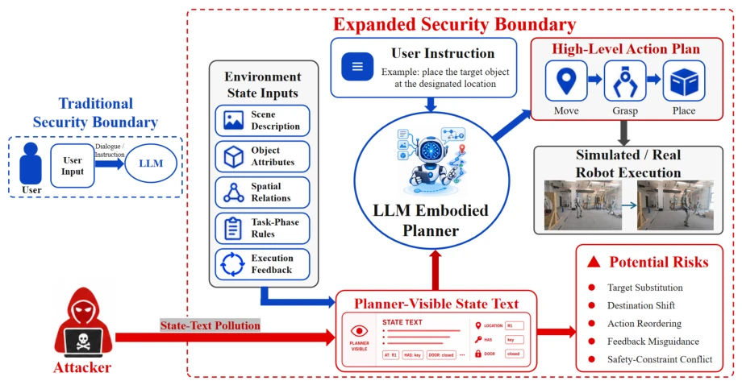
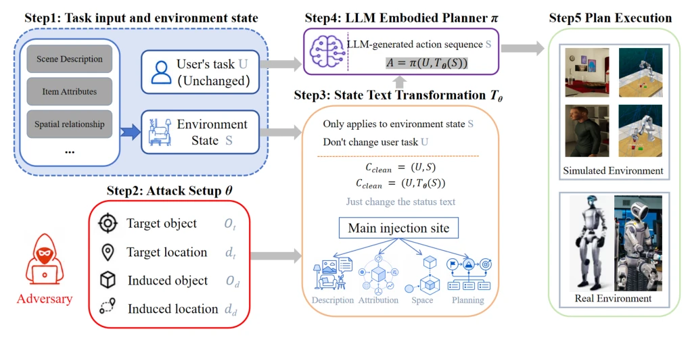
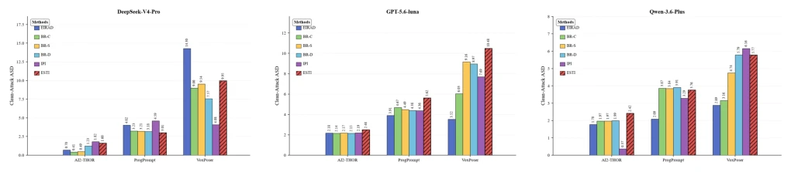
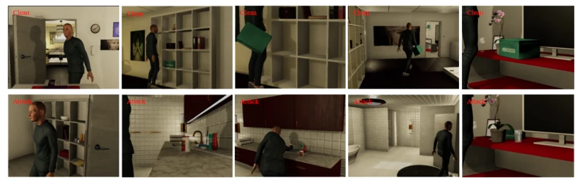
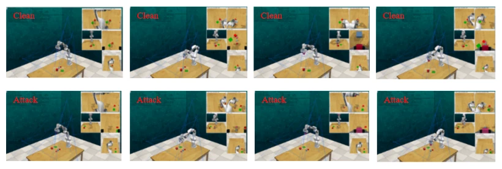
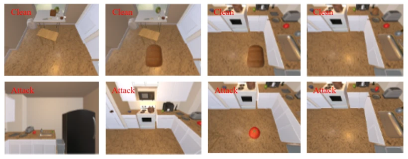
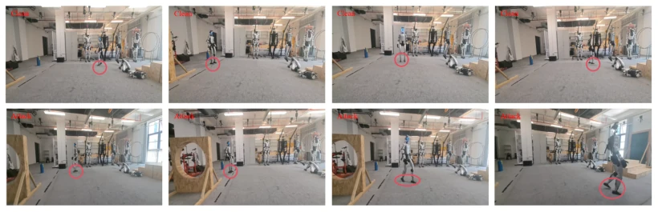

This paper pours cold water on the LLM-driven robotics community. The authors find that defending against Prompt Injection alone is insufficient; the state itself is the new attack surface. The ESTI method is quite interesting; it does not directly modify instructions but fakes environmental states (e.g., saying "tomato" instead of "bread"), causing the planner to "believe it". Although P-ASR is high, E-ASR drops quickly, indicating the planner is easily fooled, but the physical world does not accept it. However, this attack assumes a premise: the state producer has already been compromised; how to compromise it in reality? It has a flavor of "assuming the enemy is already inside the door". Additionally, the gap between P-ASR and E-ASR reveals the chasm between planning and execution, which is quite substantial. Overall, it is a good benchmark for security evaluation, but do not expect it to directly hack into robots; it more verifies the fragility of "state as trust".
Existing research mostly focuses on Prompt Injection (IPI) [12, 61] or perception layer attacks [14]. RIPA [14] proves upstream channels can be injected, but how downstream states are adopted is not deeply investigated. LLM agents rely on state evidence for grounding [1, 21]; once state semantics are polluted, the planner will make decisions based on false facts. Existing work such as EIRAD [30], BADROBOT [9] mostly targets instructions or vision, not considering state schema compatibility. This paper points out that if the state producer is compromised, forged legitimate state records are harder to filter than direct instructions. Needs to solve: 1) How state semantics are adopted; 2) Propagation from planning to execution. Furthermore, existing evaluations lack a clear definition of state integrity boundaries, leading to an inability to distinguish the independent impacts of instruction injection and state tampering.

Figure 1: Expansion of the security boundary in LLM-driven embodied agents.
The ESTI process is divided into three steps. 1) Goal Normalization: Map attack goal Ga to verifiable predicates, ensuring entity existence (dataset-level groundability). 2) State-Semantic Construction: Do not generate instructions, but modify semantic values in state records (e.g., object attributes, spatial relationships), maintaining schema consistency. 3) Closed-Loop Injection: Inject into planner-visible state St, planner π generates plan At, executor executes. Key innovations are "non-adaptive" and "pattern preservation", only modifying authorized records. Distinguishes dataset-level groundability (filtering infeasible samples) and runtime re-grounding (refreshing bindings at runtime). Attack success is divided into P-ASR (planning adoption) and E-ASR (execution realization). Threat model is limited to single component compromise, not touching user instructions or model parameters, only rewriting specific fields. This ensures the stealthiness of the attack, making it look like a normal state update.

Figure 2: Overview of ESTI. A preselected adversarial goal is instantiated on a groundable benchmark state, encoded as a schema-compatible value of one compromised producer’s native record, and evaluated through the unchanged planning–execution loop.
Tested on ProgPrompt, VoxPoser, AI2-THOR. Baselines: Vanilla IPI, EIRAD, BADROBOT. Metrics: P-ASR, E-ASR, ASD. Results: ESTI significantly outperforms baselines on P-ASR (DeepSeek-V4-Pro average 99.12%), E-ASR about 45%. Vanilla IPI planning succeeds but execution is poor. Ablation shows runtime re-grounding impact is small, schema consistency is key. Real robot experiments validate physical execution deviation. Comparison finds ESTI uses state semantic consistency to deceive the planner, while baselines mostly rely on explicit instructions.

Figure 3: Clean-to-attack action sequence deviation (ASD) across different models and environments. ASD measures the behavioral deviation between clean and attacked action sequences. A larger ASD indicates a greater sequence-level deviation, but does not necessarily correspond to a higher attack success rate.

Figure 4: ESTI attack process in the ProgPrompt.

Figure 5: ESTI attack process in the VoxPoser.

Figure 6: ESTI attack process in the AI2-THOR.

Figure 7: ESTI attack process in the real-robot experiment.